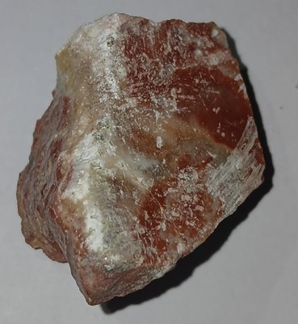

Jaspe Rojo
MC-01

| Origen | Sedimentario / Hidrotermal por sustitución coloidal |
| Distribución geográfica | Brasil, India, Sudáfrica, Madagascar, EE. UU. |
| Textura | Criptocristalina, granular muy fina, compacta |
| Composición química | SiO₂ con hasta 20% de impurezas (Fe₂O₃) |
| Dureza | 6.5 – 7 |
| Color | Rojo ladrillo, rojo pardo |
| Tipo de roca | Sedimentaria silícea |
| Clase (Strunz) | 04.DA.05 (Óxidos) |
| Uso | Joyería lapidaria, objetos ornamentales y abrasivos menores. |
| Otras características | Estudios por DRX evalúan el jaspe como indicador paleoclimático debido al atrapamiento de trazas químicas durante su precipitación sedimentaria. |